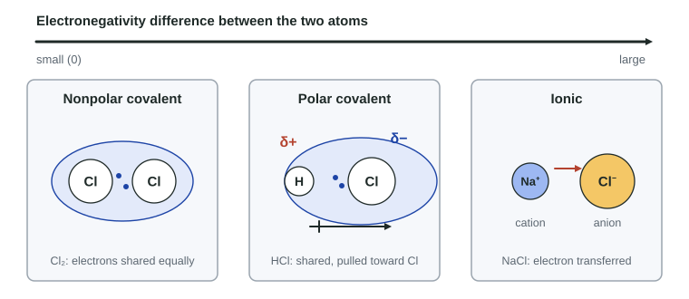

Unit 1 was about single atoms. Almost nothing around you is made of single atoms, though: they are joined into molecules, ionic compounds and metals. This page answers one question: when two atoms are joined, where are the electrons between them, and why? The answer sorts every bond into a few types, and those types explain most of what the rest of the course says about how substances behave.
What a chemical bond is
A chemical bond is an attraction that holds atoms or ions together. It is not a stick or a hook. It comes from Coulomb's law: positive nuclei attract negative electrons. When two atoms get close, each nucleus attracts not only its own valence electrons but also the valence electrons of the other atom. If the electrons settle where both nuclei can pull on them, the two atoms are held together.
Only valence electrons take part. The core electrons sit close to their own nucleus, well inside the atom, and are not shared or moved.
Covalent bonds: sharing a pair
Two chlorine atoms each have seven valence electrons and attract electrons strongly. Neither can pull an electron fully away from the other, because both pull equally hard. Instead each contributes one electron to a pair that sits between the two nuclei. Both nuclei attract that pair, and that attraction holds the atoms together. This is a covalent bond: a pair of electrons shared between two atoms. Covalent bonds form between nonmetal atoms.
In Cl₂ the two atoms are identical, so the pair is attracted equally and sits in the middle. That is a nonpolar covalent bond.
Polar covalent bonds and partial charges
Now join H to Cl. Chlorine is more electronegative than hydrogen (3.2 against 2.2 on the Pauling scale): its nucleus pulls harder on shared electrons, for the reasons you met in 1.7 (larger effective nuclear charge acting on its valence shell). The pair is still shared, but it spends more of its time near Cl. That is a polar covalent bond.
Because the electrons are not evenly spread, Cl carries a partial negative charge, written δ− ("delta minus"), and H carries a partial positive charge, δ+. These are smaller than the full charge of an ion: no electron has left H completely. A bond with a δ+ end and a δ− end is a dipole. Chemists draw it as an arrow pointing toward the δ− atom, with a small cross on the tail at the δ+ end.

Worked example. Electronegativities: N 3.0, H 2.2, C 2.6, O 3.4. Which bond is more polar, N–H or C–O, and which atom is δ− in each?
N–H: 3.0 − 2.2 = 0.8. C–O: 3.4 − 2.6 = 0.8. The differences are equal, so the two bonds are about equally polar.
The δ− atom is the more electronegative one: N in N–H and O in C–O.
Always subtract the smaller value from the larger, and compare differences, never single values.
Ionic bonds: an electron moves
Put sodium next to chlorine. Sodium's one valence electron is in its third shell, shielded by ten core electrons, so it is held weakly: sodium has a low ionization energy. Chlorine attracts an extra electron strongly. The electronegativity difference is large (3.2 − 0.9 = 2.3), and the shared pair is pulled so far toward Cl that, in effect, the electron has moved. The result is a sodium cation, Na⁺, and a chloride anion, Cl⁻.
An ionic bond is the Coulombic attraction between those oppositely charged ions. Ionic bonds typically form between a metal, which loses electrons easily, and a nonmetal, which attracts them strongly. In a solid ionic compound each ion is surrounded by ions of the opposite charge in a repeating pattern; topic 2.3 looks at that arrangement and the properties it causes.
Metallic bonding: a sea of electrons
In a piece of sodium metal there is no chlorine to take the electrons. Every atom has the same low hold on its valence electron, so the valence electrons leave their own atoms and move freely through the whole sample. What is left is a regular array of metal cations surrounded by a "sea" of delocalized electrons: electrons that belong to the whole piece of metal rather than to one atom or one bond.
The metallic bond is the attraction between the cations and this electron sea. It holds the metal together in every direction at once. Topic 2.4 uses this picture to explain why metals bend and carry electric current.

A continuum, not three boxes
| Covalent | Ionic | Metallic | |
|---|---|---|---|
| Typical elements | nonmetal + nonmetal | metal + nonmetal | metal atoms only |
| Valence electrons | shared between two atoms | transferred; ions form | delocalized over all the cations |
| What attracts what | both nuclei attract the electron pair | cations attract anions | cations attract the electron sea |
| Example | Cl₂ (nonpolar), HCl (polar) | NaCl, MgO | Na, Cu |
Covalent and ionic bonding are two ends of one scale. As the electronegativity difference grows, a bond goes from nonpolar covalent, to polar covalent, to mostly ionic. There is no sharp cutoff: a bond with a difference of 1.7 has a lot of ionic character, and one with 0.4 very little. On the exam, use two clues together: the size of the difference and whether a metal is involved.
Common mistakes
- Polarity from one atom. "C–Cl is very polar because chlorine is electronegative." Polarity depends on the difference: C–Cl differs by only 0.6.
- Dipole arrow backwards. The arrow points toward the δ− end, the more electronegative atom.
- "Positive ions, so ionic." Metals contain cations too. What balances them, anions or an electron sea, decides the bond type.
- "The atom wants a full shell." Atoms do not want anything. Explain with attraction: how strongly each nucleus holds or attracts electrons.